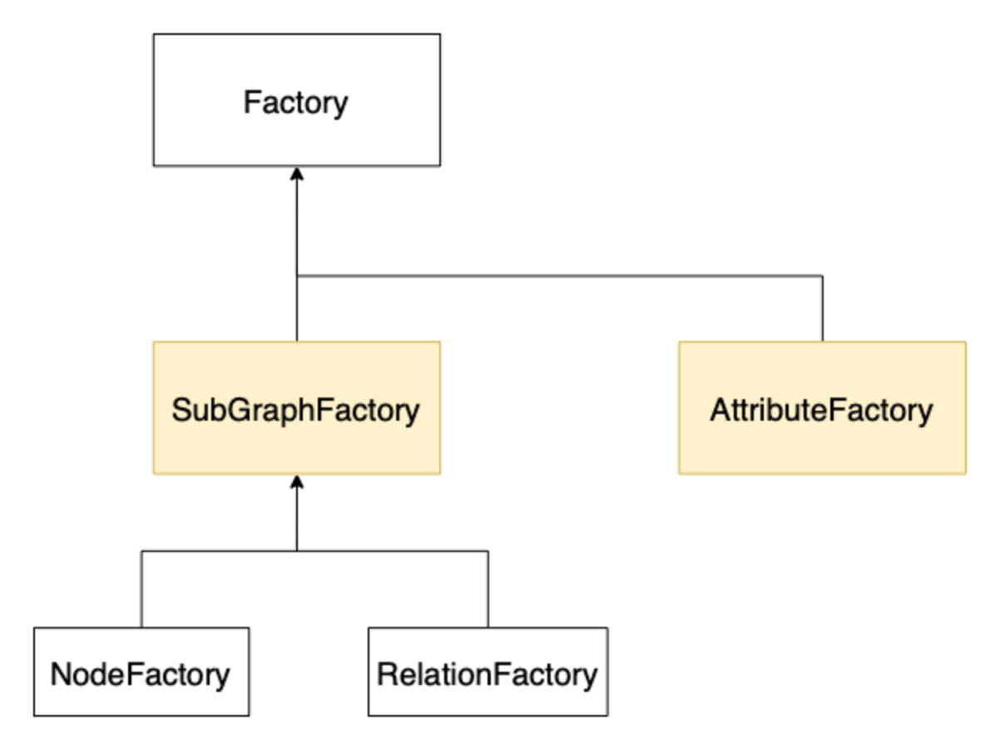

Building your own Wrappers
A wrapper allows you to inject custom code into the conversion.
A wrapper inserts preprocessing and postprocessing before and after a wrapped factory.
There are three possibilities on how to create such factory wrappers.
The simplest way is to define either a preprocessor (processing the Resource before it is passed to the factory)
or a postprocessor (processing the factory’s output). They are created by writing a simple python function.
If you need more sophisticated functionality that uses both, you can define an entire wrapper class.
This chapter will guide you through the creation of your own wrappers.

Background
First, we need to be aware of the different factory types rel2graph uses. The input of every factory is always a resource, but depending on the type the output varies. To write wrappers, we need to distinguish the two main factory types: SubgraphFactories and AttributeFactories.
{kind=link}
AttributeFactories
AttributeFactories produce Attribute objects. An Attribute is a simple object that behaves as follows:
from rel2graph import Attribute
myattr = Attribute("mykey", "myvalue")
key = myattr.key # get the key of the attribute
value = myattr.value # get the value of the attribute
An Attribute is immutable, so it can’t be changed.
If you want to change an existing attribute, you must create a new one with the key/value of the existing attribute including the change and return the new attribute.
Whenever you refer to an entity attribute, the parser in the Attribute will create an AttributeFactory
(for example mykey = EntityName.attribute or just EntityName.attribute).
Note that a static attribute will also create an AttributeFactory that will just ignore the input resource (for example, key = "staticstring").
Given a resource the AttributeFactory that is created from mykey = EntityName.attribute will produce the
attribute Attribute("mykey", **value at resource.attribute**).
SubgraphFactories
SubgraphFactories produce, as the name suggests,
a py2neo Subgraph object containing py2neo
Nodes and Relationships.
When your write NODE(...) or RELATION(...) in the schema file,
the parser will create a NodeFactory or a RelationFactory, respectively, out of your specification.
Both of them are SubgraphFactories. The NodeFactory returns a subgraph with a maximum of one node, and the
RelationFactory returns a subgraph with an arbitrary number of relationships.
The nodes and relations of a subgraph can be accessed with subgraph.nodes and subgraph.relationships.
Please check out the documentation of the py2neo objects for details about how to operate with them (click on the links).
Registering
When we write a pre/postprocessor function or a wrapper class, we need to register it
such that the Converter knows of its existence.
Registering is done with python decorators. When registering pre/postprocessors we need to specify if it’s
for an AttributeFactory or a SubGraphFactory.
A wrapper class needs no further specification. The following decorators are available for registering:
register_attribute_preprocessorregister_attribute_postprocessorregister_subgraph_preprocessorregister_subgraph_postprocessorregister_wrapper
The library will not check if your registered functions/classes match the expected format. If the function behaves other than expected, this will result in undefined behaviour during runtime. Make sure you define your functions/classes correctly.
Preprocessors
A preprocessor transforms the resource before it reaches the factory.
We write a function that takes a resource as input to define a preprocessor.
If a factory gets None as input, it will simply create nothing.
Therefore, if you want the factory only to produce an object if a condition is given,
you can write a preprocessor and return None if the resource does not meet the requirement.
We can pass static (string) arguments from the schema file to a preprocessor. Simply add them in your function as parameters behind the resource and specify the arguments in the schema file.
Some examples:
from rel2graph import register_attribute_preprocessor, register_subgraph_preprocessor
@register_attribute_preprocessor
def my_attr_preprocessor(resource: Resource) -> Resource:
# do something to the resource
...
return resource
@register_subgraph_preprocessor
def only_create_subgraph_if_preprocessor(resource: Resource, key: str, value="can also have a default value": str) -> Resource:
"""Only creates the subgraph if resource[key] == value"""
if resource[key] != value:
return None # do not create this subgraph
return resource
schema.yaml
ENTITY("type"):
only_create_subgraph_if_preprocessor(NODE("label"), "somekey", "specificvalue"):
- mykey = my_attr_preprocessor(type.myvalue)
The node “label” is only created if the attribute “somekey” of the “type” resource is exactly “specificvalue”.
Postprocessors
A postprocessor transforms the result of the factory. To define a postprocessor, we write a function that takes an attribute/subgraph as input, depending on the type. As described in Preprocessors, one can pass static (string) arguments to a postprocessor from the schema file.
Some examples:
from rel2graph import register_attribute_postprocessor, register_subgraph_postprocessor, Attribute
@register_attribute_postprocessor
def attr_append_postprocessor(attribute: Attribute, value=" appendix": str) -> Attribute:
"""Append the value to the attribute"""
new_attr = Attribute(attribute.key, attribute.value + value) # Attribute is immutable -> create new
return new_attr
@register_subgraph_postprocessor
def my_subgraph_postprocessor(subgraph: Subgraph) -> Subgraph:
# do something with the subgraph
...
return subgraph
schema.yaml
ENTITY("type"):
my_subgraph_postprocessor(NODE(attr_append_postprocessor("label"))):
- mykey = an_attr_preprocessor(attr_append_postprocessor(type.myvalue)) # you can mix pre and postprocessors
- another = attr_append_postprocessor("static value", "i append this")
This will create a node with label “label appendix”. The value of the attribute “another” is “static valuei append this”.
Full Wrappers
If you require more sophisticated functionality, like, for example, passing information from preprocessing to postprocessing or a state,
you can create full wrapper classes. They need to inherit from either SubgraphFactoryWrapper or AttributeFactoryWrapper.
Their constructor takes as the first parameter the wrapped factory, with which the parent’s constructor is called.
As for pre/postprocessor functions, the constructor can take static string arguments from the schema file.
Further, the wrapper class needs to implement the construct(resource) method.
To get the resulting product of the wrapped factory, call super().construct(resource) in your construct function.
The following example checks that at least one relation exists in the resulting subgraph, iff the provided resource is not None. This could not be done with simple pre/postprocessor functions. Obviously, everything that can be done with pre/postprocessor functions can also be done with full wrapper classes.
from rel2graph import SubGraphFactoryWrapper, register_wrapper
@register_wrapper
class REQUIRED(SubgraphFactoryWrapper):
def __init__(factory: SubgraphFactory, static_string_parameter: str):
super().__init__(factory)
self.error_msg = static_string_parameter
def construct(resource: Resource) -> Subgraph:
subgraph = super().construct(resource)
if resource is None:
return subgraph # resource was None -> no check
else:
if len(subgraph.relationships) == 0:
raise Exception(self.error_msg)
return subgraph # condition is met -> return produced subgraph
schema.yaml
ENTITY("type"):
...
REQUIRED(RELATION(from, "relation type", MATCH("other", key="value")), "No match for label other and key=value"):